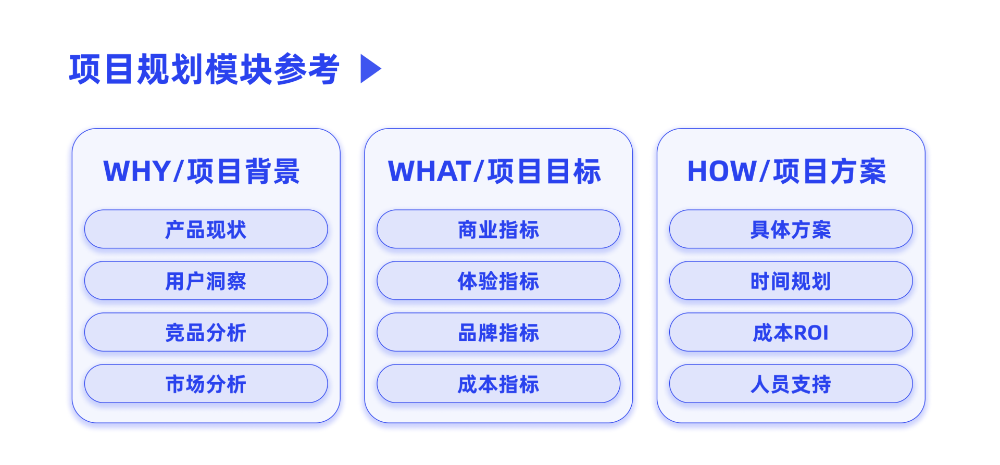
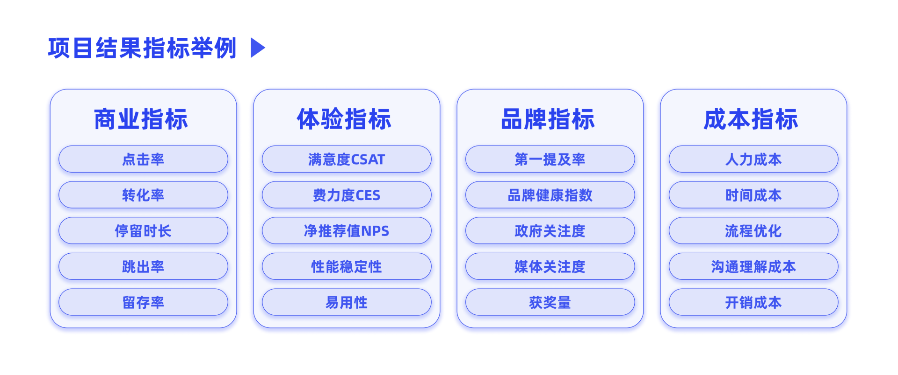
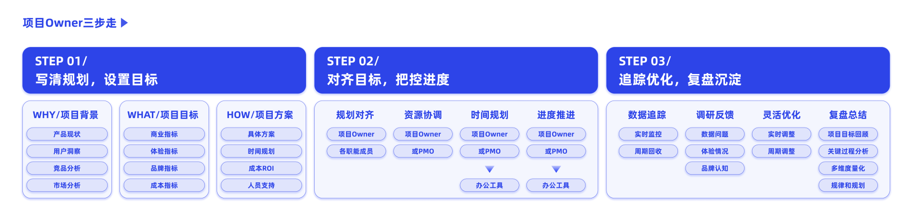

- 00 开篇词 升维思考，是设计师有效成长的第一步.md.html
- 01 业务周期：0-1-10-100-N的发展策略.md.html
- 02 商战模式：如何在商业竞争下突出重围？.md.html
- 03 市场洞察：如何找寻差异化撬动支点？.md.html
- 04 用户洞察：不懂用研的设计师不是好职场人.md.html
- 05 用户画像：是形式主义还是真的有效？.md.html
- 06 用户旅程：挖掘不同用户的核心机会点.md.html
- 07 职场晋升：看懂晋升的“游戏规则”.md.html
- 08 设计价值升级：五层进阶突破成长.md.html
- 09 基础价值 核心三原力：如何将需求转化为设计稿？.md.html
- 10 基础价值 第一性原理：从问题本质解决问题.md.html
- 11 基础价值 设计复盘：只是量化设计结果吗？.md.html
- 12 二级价值 负向网兜：如何全面发现负向问题？.md.html
- 13 二级价值 设计自驱：如何做好项目Owner？.md.html
- 14 二级价值 自驱合作：如何反内卷处理合作关系？.md.html
- 15 三级价值 增长误区：思维惯性陷阱和虚荣数据.md.html
- 16 三级价值 用户增长历程：AARRR是万能的吗？.md.html
- 17 三级价值 产品增长：如何做好产品创新？.md.html
- 18 三级价值 运营增长：如何自驱营销活动和投放？.md.html
- 19 三级价值 品牌增长 抢占心智，赢得人心红利.md.html
- 20 三级价值 增长实操：如何“步步为营”推动落地？.md.html
- 21 四级价值 L型赋能：让T型人才发挥更大价值.md.html
- 22 四级价值 “网状对比”解决共性痛点.md.html
- 23 五级价值 商业画布：设计师可以担任业务方吗？.md.html
- 24 五级价值 共创洞察：如何做好一次完善的workshop？.md.html
- 25 五级价值 领导力觉醒：写给新晋管理者.md.html
- 26 工作选择（上）：2B or 2C设计师？如何规划领域？.md.html
- 27 工作选择（下）：大厂 or 小厂？如何选择赛道？.md.html
- 28 人才地图：认知自我，成为高潜力人才.md.html
- 29 成长历程：如何从设计小白成长为团队负责人？.md.html
- 30 冰山模型：如何成为让面试官欣赏的“面霸”？.md.html
- 31 作品集指导：什么是面试官喜欢的作品集？.md.html
- 用户故事 什么是职场设计师进阶的正确姿势？.md.html
- 结束语 突破自我，成人达己.md.html
- 捐赠
13 二级价值 设计自驱：如何做好项目Owner？
你好，我是小乔。
在我们进阶成长的过程中，会面临两次质变突破，第一次是从承接需求转变为自驱发起项目，担任项目Owner；第二次是从项目负责人转变为团队管理者，有架构上的汇报线和打绩效的重任。而我们现在，已经踏上了二级价值的阶梯，即将实现第一次质变。
我们根据上节课的“负向网兜”全面归纳了核心问题，又按业务当前的目标排列了优先级，选出了最值得我们优化的那个项目。在与主管沟通，达成共识后，就可以发起自驱项目了，也恭喜你开启了项目Owner的身份。
通常我们认为，只有设计师自己担任项目Owner，才是真正意义上的设计自驱，不然本质上只是给业务方提出建议，那就依然停留在基础价值阶段。这里出现了一个新的概念，设计自驱，它要求我们负责好自己的项目，确保将项目推动落地，取得结果。那么，为什么一定要在二级价值中实现设计自驱呢？
为什么设计自驱很重要？
设计自驱之所以重要，是因为高质量设计稿的产出几乎是每位同学都可以做到的。年轻的同学在手活技法和业务经验上也许会有一定差异，产出的质量会有好坏之分，但当大家工作到3年左右，差异就会逐渐缩小。当大家的产出结果比较接近时，对组织来说就很难评估出哪位同学更加优秀、表现更加高潜；对设计同学自身来说也处在成长瓶颈期，每天做一样的事，温水煮青蛙。此时，设计自驱的能力就可以让你脱颖而出。
从公司招聘人才的角度来说，除了表层的专业能力以外，更会考量候选人的长期潜质和爆发力，比如价值观、个性特征、内在驱动力等特质，我们会在之后的冰山模型一课中重点讲解。这是为什么呢？
我以美国知名媒体平台Netflix为例，也许你没有听过这家公司，但你一定听说过他们在2013年出品的《纸牌屋》。Netflix发展非常迅速，短短几年内，股票市值就从1美元涨到350美元，核心就在于企业文化和人才密度。他们会开除工作合格的员工，因为仅仅做到合格是不够的，必须让合格的人离开，才能留下优秀的人，从而提高人才密度。其实，国内的头部互联网大厂也都在遵循良币驱逐劣币的汰换机制，因为人才才是第一护城河。
还记得我们在设计价值升级那节课讲过的内容吗？想要被组织评出好的绩效，就要输出比同级别的Peers更高的价值，并且可以自证“本年度，我为什么比其他同学的表现更优秀”。想要晋升，就需要体现超越目前级别的能力，因为晋升答辩不是为了“复盘我做了什么”，而是通过讲我做了什么，证明给评委看“我在未来可以给公司带来更大价值”。
这也是为什么大厂的Job Model里都在强调设计自驱、独立负责，而晋升速度快的同学往往都是因为主动发起了自驱项目，并推动落地取得了成果。
如何做好项目Owner，推动自驱项目？
在推动自驱项目的过程中，你也许有过不少让人心疼的遭遇。
我团队的一个很优秀的同学有次跟我说，他以前工作也很主动，也很想自驱做点事，但每次辛辛苦苦把优化想法用设计稿做好，把想法丢在群里后，这件事情就不了了之了。他是来了我团队之后，才明白应该如何推动项目的。
我曾经也是因为频繁经历类似的无奈，所以跳槽离开了某家大厂。面对这样的环境，与其依赖运气，企盼着遇到一个好的业务方搭档，让TA把你的想法发扬光大，还不如我们自己成为项目Owner，推动设计自驱项目。
这里，我们需要明确的是，如果只是承接一个业务需求，作为这个需求的主要设计师，那只能被称为是这个项目的设计Owner。而项目Owner，就是提出并推动这个项目的负责人，需要全程把控好项目的规划、进度、方案、落地、结果和迭代，不再只是一个跟着业务方的节奏产出设计稿的角色了。
在完成转变的这条路上，我将设计师担任项目Owner的工作分为3个步骤，写规划、控进度和做沉淀。
第一步：写清规划，设置目标
首先我们自己需要理清思路，并和自己的主管核对项目价值，共同决策项目目标和数据指标。
在此需要注意的是，与主管共同决策，并不是两手空空跑去和主管讨论零散的想法，而是已经有了调研和思考的初步结论，让主管判断合理性，并给出相关建议。毕竟你的主管可能同时在负责几十个项目，还要写部门规划、培养团队人才，TA期待的是一个可以主动自驱接住事情的人才。
既然我们要讲清楚规划，就需要讲清楚为什么要做这个项目，这个项目目标是什么，如何落地这个项目，也就是Why，What，How。每个部分可以包含的内容模块，我已经在下图中做了示范，希望能帮助你梳理出一个有说服力的规划提案。

当然，这些内容模块并不都是需要的，灵活挑选能够说清楚这个自驱项目的模块即可。写规划的目的一方面是帮助我们自己思考清楚，更重要的是让他人意识到项目的重要性和可行性。
Why里面的部分就是讲明推动这个项目的背景原因，也就是现有问题和分析洞察，通过我们第一章的学习和上节课的内容，已经可以推导得出。因此，我们这节课的重点将放在What和How的部分。
WHAT-制定项目目标：
项目目标和相关的指标，就是可以判断我们这个项目做成功的标志，也是我们用来衡量项目价值的重要依据。指标相关的内容，我们在用户洞察和设计复盘课程中学习过，只是之前我们是拆解目标的角色，而在自驱项目的规划中，我们是制定项目目标和数据指标的角色。
我们再来简单回顾一下。根据项目的不同，指标通常可以分为4种类型：

当然，这四大指标和具体的内容只是给你一个大致的参考，在具体规划分析的时候，还需要根据项目的实际情况筛选或补充。
举个例子，我曾经作为某公司AR的业务负责人和设计负责人，需要制定项目规划、证明这个项目的价值，才能在众多公司的高优需求中将AR项目的优先级往前排。这里我以商业指标和品牌指标两个部分为例来分析。
首先要看的是用户使用AR的渗透率、交易转化率、商品收藏率等商业指标。商业指标的提升，往往是能让大家认可项目重要性的最有力依据。如何制定商业指标，核心在于找到对比的标杆。这个在我做了许多AR相关的项目后，已经有了比较强的数据判断感知，并能在每次的AR项目中预估出大概的数据指标。
同时，品牌力的提升也是公司看重的价值，其中包含用户对该平台AR的好评度和提及率；通过AR高新科技项目，为公司带来的政府关注度和媒体关注度；通过AR项目的高质量体验，为公司申请到国际奖项的数量等等。
你可以看到，我规划的AR项目结果指标，并没有把图中的每个指标全部包含。也就是说，我们需要根据项目的具体情况，筛选出项目真正需要关注的指标，目的是让大家认可我们的项目价值。
HOW-制定项目方案：
目前我们已经讲清楚为什么要做这个项目，以及这个项目可以带来的价值了。职场成熟度比较高的同学除了能够提出问题，也必然会针对提出的问题规划解决方案。解决方案中可以包含我们的设计方案示意图、时间规划、成本ROI评估和人员支持等内容。
具体的设计方案，和你实现基础价值的推导过程一致。学习完基础价值的课程后，我相信一定难不倒你。
而时间规划，需要写清期望上线的时间，并大致倒推出启动项目的时间。因此我们在制定项目规划时，就要清楚此时是否是项目提案的最佳时间，宁可早点也不要延误到来不及落地。比如在电商平台做一场S级大促活动，需要至少提前三个月就启动，而我们提出项目规划的时间就需要更早一些，配合的部门和人力也较多、较复杂。
除了时间规划以外，我们还需要衡量项目成本。因为项目在不同阶段，对ROI的要求不同。ROI就是投资回报率，计算公式为：投资回报率（ROI）=年均利润/投资总额×100%。但具体的计算方式会根据领域的差异有所区别，比如电商会看GMV/广告成本， 2B产品会看LTV/CAC，也就是用户带来的整体收益除以获得这个用户的成本。你可以简单地理解为，公司做这个项目，需要投入成本，但不管短期还是长期，它总得产生回报，让公司明白投资的价值。
除了人力成本外，不同的项目都会多多少少产生成本。营销活动需要补贴，投放需要广告费用，线下商会需要场地开销，完成一些功能会产生供应商的采购支出。这些费用可以很高，但用户回报需要更大，才值得公司投入去做。
比如我们做一个项目，平均每周花费的成本总和为100万，同时平均每周会因为这个项目产生200万的利润。我们根据ROI的计算公式，该项目的ROI=（200万×4个星期×12个月）/（100万×4个星期×12个月）×100%=2。利润是成本的2倍，是不是看起来就很值得去做，那这样公司是不是就愿意投入这个项目了呢？其实不一定，因为就算是解决同样的问题，也许其他项目的ROI更高。所以什么项目值得推进，底层逻辑是，此时此刻最适合业务去做的性价比最高、又可以落地的项目。
这怎么还要做数学题？这可太为难我们设计师了，那我们应该如何判断达到多少ROI才值得去推动这个项目呢？
每家公司的每个业务都不同，所以我们此时可以把它交给更专业的财务和运营同学，他们有精确的计算评估公式，帮助你判断项目值不值得做。除了ROI以外，不同类型的项目也会看不同的评估数据，比如电商会看GMV、ARPU值，投放会看CPI、留存，为了看长期投资回报率，也会分析LTV模型，公司可以先亏本投放，但未来用户需要带来更大的收益回报。
所以在推动项目的过程中，我们在自己无法评估的情况下，要学会请教更专业的人，让专业的人做专业的事，给我们专业的支持。
通常在产品周期的引入期和成长期，公司不会过于缩减成本、把控ROI，也就是大家常说的“烧钱”阶段，但也需要让公司可以预期到未来的价值，对这个项目有信心，才能顺利将项目推动。
规划中的最后一步是做人员支持的盘点，通常我们会先与相关职能的同学提前打好招呼，比如需要产品、运营、技术的同学共同完成，我们就需要让他们帮忙评估出完成项目大概需要投入的人员和时间。
完成了整个规划的制定，接下来就差临门一脚，将项目提案上去。通常我们会遇到两种情况，一种是公司本身有完善的需求列表评审会，我们需要在评审中得到认可，通过提案；另一种是公司缺乏正规的评审会流程，大家需要拉拢相关人员，自下而上推进项目。具体内容，我们将在下节课讲怎么处理合作关系的时候，为你具体解答。
第二步：对齐目标，把控进度
当我们的规划和目标已经足够清晰，而且“合伙人”们都齐全了的时候，就可以撸起袖子大干一场了。
如果项目有PMO帮忙把控进度流程，这个过程基本不太需要设计师花费太多精力；如果公司没有PMO的职能，作为项目Owner的设计师就需要自己来。
开动之前，首要解决的事情就是目标的对齐。把项目规划向每个伙伴澄清，这个阶段与规划阶段不同的是，要将规划中预估的人力、时间，转为确切的对接人和具体的时间计划。
在规划项目进度的时候，如果有明确的上线时间，就需要严格倒推每个阶段产出的工作；如果没有明确的上线时间，可以参考大家每天可产出的工作量来规划。
行业内有许多可以帮助我们规划项目进度的工具产品，比如飞书文档、Teambition等，我们可以使用甘特图、任务看板等功能，可视化地将每个时间段的任务排布清晰。当然，如果你的公司没有采购这些办公产品，使用Excel、苹果自带的日历也都是可以的。工具是什么不重要，重要的是规划内容本身。
做好时间分配后，需要制定周期对齐的计划，这在项目管理中是极其重要的。根据项目的紧急程度和复杂程度，项目全员可以每周对焦一次产出，也可以每两天对焦一次产出。周期性对焦可以有效地拉齐每个人的认知，避免理解偏差造成产出走偏；同时，也可以给每个项目成员一定压力，在对焦前完成自己该完成的工作，确保严格按照时间进度执行。
第三步：追踪优化，复盘沉淀
成功推动项目上线后，就可以开始监控数据了。这就像是我们为了高考紧张备战了很久，现在终于上考场了一样。但项目上线和高考最不一样的地方在于，我们可以实时知道题目答得对不对，并针对问题数据进行及时优化。根据项目的具体情况，我们可以选择实时揭晓答案或是积累一段时间的数据之后再揭晓答案。
比如一个产品功能上线后，根据不同情况，通常需要监控1周到数月不等，才能得出比较可信的用户使用数据；再比如做一场运营活动，就需要每天进行数据监控，甚至每小时都可以做一次数据回收和分析，实时调整策略。
以手机淘宝曾经做双11的项目为例，从首页进入主会场的大Button设计，采用什么颜色、文案、主题、风格、商品品类图片等，都是经过实时监测和实时优化调整的。数据一旦下跌，就更换设计样式。经过这次监控，设计团队不仅能操控主会场PV的涨幅和跌幅，也总结了详尽的主会场入口设计方法经验，为团队带来更多设计价值。
完善的复盘不仅是这一次项目的资产，同时也对未来类似的项目都能起到指导作用，除了设计稿以外，经验成果同样也是设计价值。你也可以复习一下我们学过的设计复盘课程，回顾一下具体的复盘方法。
今日小结
今天，我们一起探讨了发起设计自驱项目的重要性。
对于我们自己来说，可以突破成长，从承接需求的角色转变为自驱发起项目的角色，实现了二级价值，也在设计师的职业生涯中完成了第一次质变。比团队内同级别的同学做到超出预期的表现，可以为我们换来更好的绩效与回报。
对于公司和组织来说，需要招聘更具备自主能动性的同学，为整个团队带来积极正向的影响，同时根据超出预期的产出，挑选出更为优秀和高潜力的同学进行重点培养。
在了解了设计自驱的重要性后，我们一起学习了如何做好自驱项目，这要求我们成为一名项目Owner，将我们自己的项目推动落地。这里主要分为三步：
- 写清规划，设置目标；
- 对齐目标，把控进度；
- 追踪优化，复盘沉淀。

我将作为项目Owner的完整流程整理在上图中，也将我们之前学过的课程串联了起来。这个过程可以使我们具备上层思维，跳出设计师的舒适圈，成为一名项目负责人，而不再只是项目的设计负责人。
我很喜欢刘润说的窄门思维：这个世界上，总有人选择开始简单的事情。虽然开始是“宽门”，但会发现，到后面竞争者挤满了道路，越来越难。而另一些人，会选择开始很难的事情，虽然开始是“窄门”，看上去荆棘密布，但一旦披荆斩棘跨过去，海阔天空。
成长必然会伴随着不适和困难。在我们还勇敢的年纪里，在自己可以承受的范围内，肌肉撕裂地成长吧。
互动时刻
回顾你过往的工作，是否曾经发起过自驱项目呢？在推动项目的过程中，遇到过哪些困难，是如何解决的呢？
欢迎把你的经历和思考在留言区分享出来，与我和其他同学一起探讨。我们建了一个读者交流群，欢迎你的加入，和其他同学一起成长！如果你觉得有所收获，也欢迎把文章分享给你的朋友一起学习。我们下节课见。
© 2019 - 2023 Liangliang Lee. Powered by gin and hexo-theme-book.